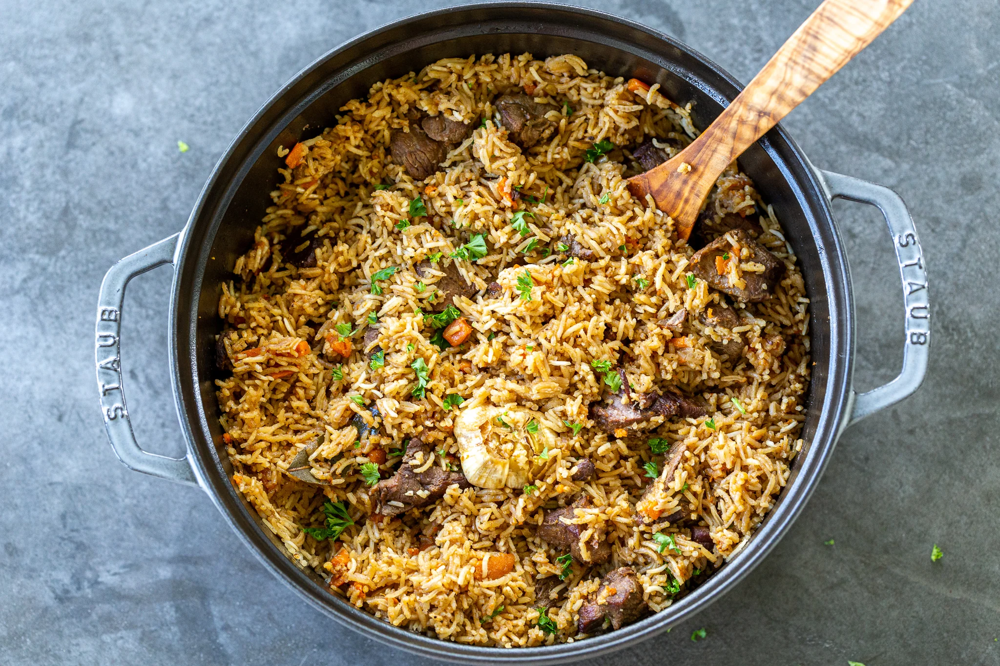
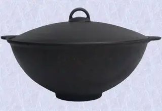
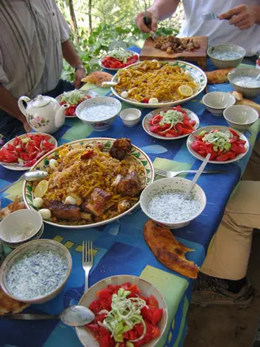

Famous Uzbek dish - Plov

About
Plov is considered a national dish in many countries of Central Asia and the Near and Middle East - Iran, Tajikistan, Uzbekistan, and Afghanistan. It is generally popular over most of the area that the Soviet Union once covered and more.
History
The name “plov” is related to “pilaf,” a name which English speakers are generally familiar with. However, while “pilaf” usually refers to a light, mostly-vegetable dish, plov is much more hearty.
Alexander the Great (356 – 323 BC) is often credited with being the “inventor” of plov. The legendary military commander didn’t want his troops to have to stop in the field for breakfast, lunch, and dinner, so he ordered his Asian cook to prepare something that a man could eat once and be full a whole day). The result was plov.

Ingredient List
- 1 pound meat (preferably lamb)
- 3 cups of long rice (rinsed)
- 3 cups of long rice (rinsed)
- 5 medium-sized carrots (coarsely sliced)
- 4-5 medium onions (coarsely sliced)
- 1 cup drippings or vegetable oil
Actual Recipe
- Cut the meat into chunks and fry in the drippings or oil until browned evenly. Add the carrots and onions to cook for a few minutes with the meat. At this point you will have a very thick, rich stew which is refered to as (zirvak).
- Add the water with salt and pepper to taste. Add any other spices you may desire (including whole garlic cloves or heads). Bring the water to a boil.
- Now add the rice. Cover the pot tightly with a lid; if it doesn’t close tightly, put a dishtowel over the top of the pot and leave on low heat for 15-30 minutes. Simmer the mixture until the water boils away (you can tell when the bubbling sound turns into a hissing sound; be careful not to overcook it). Stir the mixture well with a slotted spoon, making sure that all the rice gets cooked evenly.
- Before serving, cut the meat into smaller pieces (if it was cooked in large chunks), and mix well with the rice or lay the meat on top of the rice. Sprinkle with fresh onion slices or chopped spring onion before serving.
